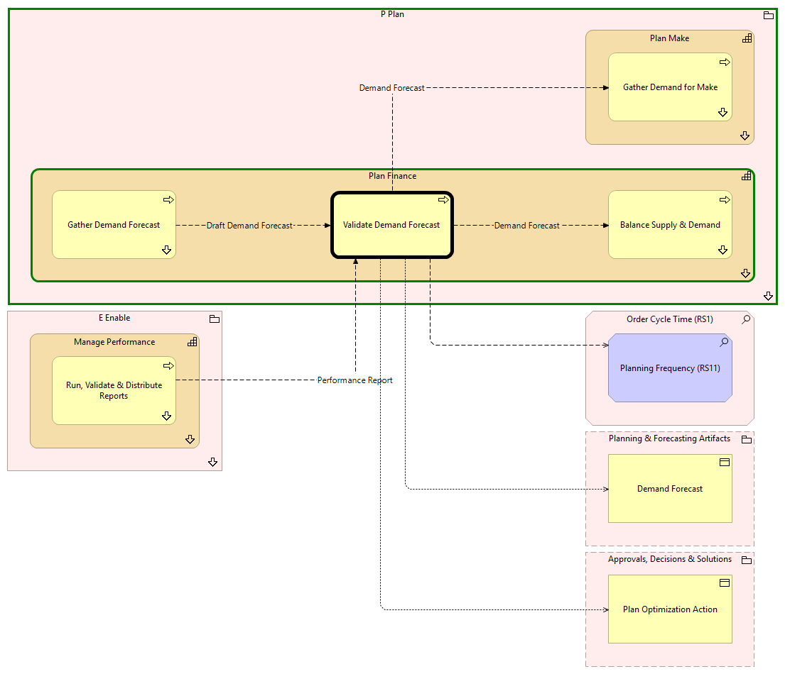

Validate Demand Forecast - Context
(
)

generated_by
build_archi_xml.py::gen_proc_node_context_view
generator_path
pedro/capabilities/build_archi_xml_assign/build_archi_xml_assign.py
run_at
2026-10-19T21:06:39
view_type
process_context
P Plan
Plan Finance
Balance Supply & Demand
Balance Supply & Demand - Context
Gather Demand Forecast
Gather Demand Forecast - Context
Validate Demand Forecast
Plan Finance - Processes
Plan Make
Gather Demand for Make
Gather Demand for Make - Context
Plan Make - Processes
P Plan - Processes
E Enable
Manage Performance
Run, Validate & Distribute Reports
Run, Validate & Distribute Reports - Context
Manage Performance - Processes
E Enable - Processes
Order Cycle Time (RS1)
Planning Frequency (RS11)
Planning & Forecasting Artifacts
Demand Forecast
Approvals, Decisions & Solutions
Plan Optimization Action
Draft Demand Forecast
Gather Demand Forecast
Validate Demand Forecast
Demand Forecast
Validate Demand Forecast
Balance Supply & Demand
Demand Forecast
Validate Demand Forecast
Gather Demand for Make
Validate Demand Forecast
Planning Frequency (RS11)
Validate Demand Forecast
Demand Forecast
Validate Demand Forecast
Plan Optimization Action
Performance Report
Run, Validate & Distribute Reports
Validate Demand Forecast